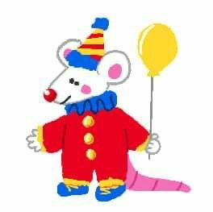

#clowns #clown memes #on that clown shit
#clowncore #clown husbandry #memes
#felix txt.
betweentonumismatist
Follow
OMG! You guys can't be serious about the idea of giving your mimes sour patch kid candy! You can't do that. Mimes has very sensitive stomachs and they need freshly baked sweets, not harsh artificial junk food. Look at these babies. Do you think they are capable of handling sour patch kids!?
Look at them! They need to eat croissants and tarts. In no way shape or form would they be able to ingest sour treats. This would more be suited towards party clowns or even scare clowns for that matter
#clown husbandry #clowns #mimes
#clowncore #clown posting #clown care
mippydoesthings
Follow
Hey, does anyone know why my clown isn't eating his pretzels. he's a party-rodeo clown mix. We got him a couple weeks ago and while he was doing fine before, he seems really out of it. Any help?
#clown husbandry #clowncore #sick clown #help
wisconsinwishman
Follow
Pierrots are one of the delicate breeds of clowns and more on the smaller size. Unlike their clown counterparts, they are coldblooded and require an abundance of heat. The caps on top of the Pierrot’s head is not a fashion statement. That is a part of their body and is required for them to gather heat. DO NOT TRIM THE CAPS OF PIERROTS. They are not for first-time owner and require higher levels of understandings.
#clowns #clowncare #clowncore #clown care
#clown husbandry #clownhusbandry #clowns are living creatures
#take care of clowns #pierrotclowns #pierrot #sad clowns

ratking_ratking
Follow
Adding onto the cost of owning a harlequin, their housing requirments are vastly different from other clowns. These clowns require a mansion in order to live, making them a pet for the elites.
Let's just get things straight; Mimes are a type of clown and therefore are capable of eating candy. ALL CLOWNS require candy in their diets. Mimes can eat candy. It's perfectly fine for them to have a Hershey's bar, or a Sour Patch kid in their diet.
Does anyone see Juggalos anywhere? I know that they're a new add-on to the clown husbandry tag, but does anyone know where one can obtain a juggalo?
they look like this:
Given a Pierrot’s appearance, they fancy monochromatic tents. They’re not an outside breed and tend to enjy film noirs and other cinematic pieces. Make sure that these have acess to things like cinemas or projectors. While not entirely solitary, these clowns do not mesh entirely with all clown personalities. If you are going to put them with other clowns, we advise to keep them around Other Pierrots, Mimes or Jesters.
 mippydoesthings
mippydoesthings